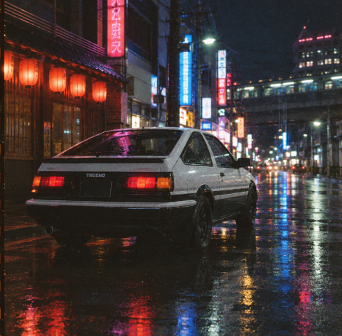
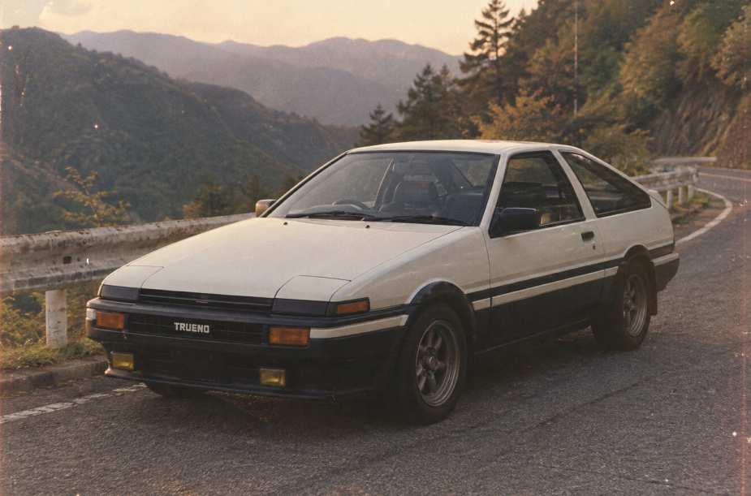
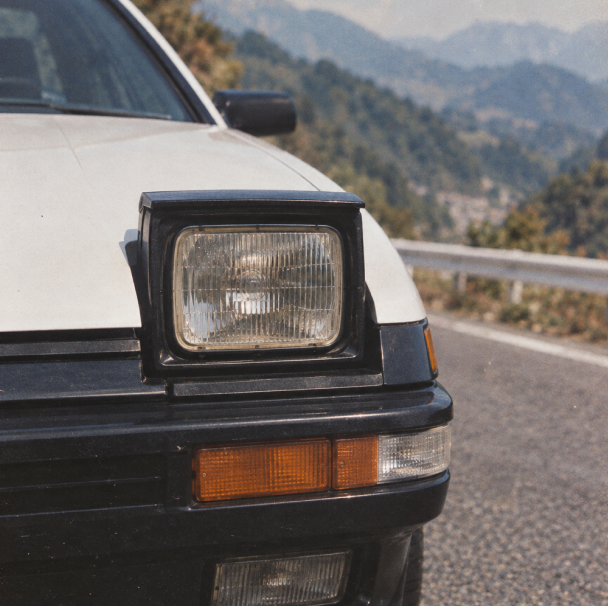

El Toyota Sprinter Trueno AE86 se fabricó entre 1983 y 1987 y fue uno de los últimos deportivos japoneses de tracción trasera con motor delantero. Su motor 4A-GE de 1.6 L y su poco peso lo convirtieron en leyenda del touge y del drift.


"AE86"?
トヨタ
FICHA TÉCNICA 仕様

- Modelo
- Toyota Sprinter Trueno AE86
- Años
- 1983 – 1987
- Motor
- 4A-GE, 4 cilindros, 1.6 L
- Potencia
- 130 PS aprox. (versión japonesa)
- Tracción
- Trasera (FR)
- Transmisión
- Manual de 5 velocidades
- Peso
- 950 kg aprox.